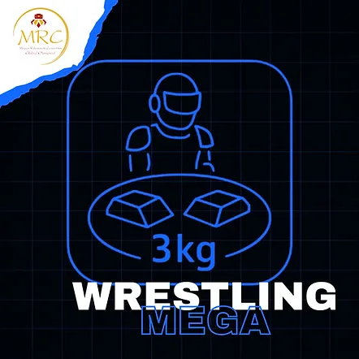
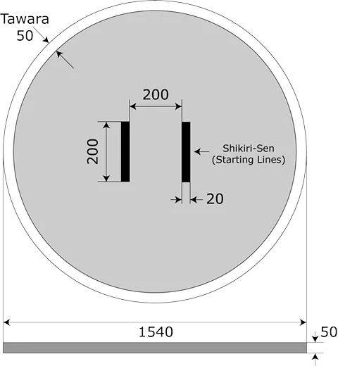
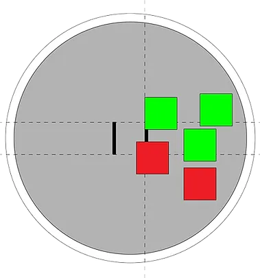
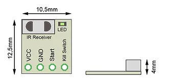
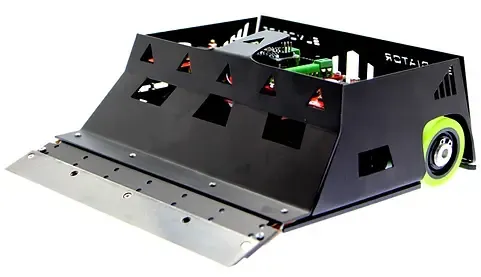

青年組與成人組 (15歲以上)
⚠️ 第零條規則 – 零容忍原則與常識
在所有運動項目中，均適用第零條規則，其內容如下：
➤「如果您不確定某件事是否被允許，那麼它很可能是不被允許的。」
所有規則皆基於常識、運動精神以及所有參與者的安全。
任何蓄意曲解、違反規則本意，或試圖利用灰色地帶獲取不公平優勢的行為，將不被容忍，並可能導致隊伍被取消比賽資格。
1. 一般面向
1.1. 相撲比賽的定義
A. 比賽在兩支隊伍/兩台機器人之間進行，每隊有一名或多名成員。每隊僅允許兩名隊員接近土俵。操作員和助理將進入比賽區域，其他隊員必須從觀眾席觀看。允許錄影比賽，可由操作員、助理或任何其他隊員進行。然而，僅允許操作員和助理在比賽區域內，其他隊員不得進入。
B. 根據比賽規則（以下簡稱「本規則」），每隊使用一台自己建造、符合第 2 節規格的機器人，在土俵（相撲擂台）上進行比賽。比賽在裁判命令下開始，持續到一方參賽者獲得兩點「有效分」為止。裁判決定比賽的獲勝者。比賽結束後，操作員和助理將前往指定房間並等待下一場比賽。
2. 一般要求
2.1. 一般機器人規格
A. 允許任何機器人設計，但不得違反第 2.2 節之限制。
B. 機器人必須能放入邊長 20 公分（200 公釐）的正方形內。
C. 機器人最大高度沒有限制；但不得超過土俵的總直徑。
D. 機器人在比賽開始時的總質量必須低於 3 公斤（3000 公克）。
E. 機器人在比賽開始後可擴展尺寸，但不得物理上分裂成碎片，必須保持為單一集中的機器人。違反這些限制的機器人將輸掉比賽。螺絲、螺母、墊圈及其他總質量小於 20 公克的機器人零件從機器人本體脫落，不構成輸掉比賽的原因。
F. 所有機器人必須是自主運作的。只要所有組件都包含在機器人體內，且該機制不與外部控制系統（人為、機器或其他）互動，則可使用任何控制機制。
G. 機器人必須在外部機殼的顯眼位置顯示由主辦單位提供的編號，以供裁判辨識。裁判將為每台機器人提供唯一的編號。
H. 機器人刀刃必須覆蓋保護套，除非機器人位於土俵上且準備戰鬥。未遵守此規則將導致警告；收到兩次警告後，將判給對手隊伍一分。
2.2. 機器人限制
A. 為安全起見，機器人必須配備可由裁判操作的紅外線啟動/停止感測器。
B. 機器人建造者負責在機器人上添加此類啟動/停止感測器。紅外線接收器的技術規格詳見附錄 2。
C. 參賽者可以自行實作硬體，或使用合作商店銷售的預製模組。
D. 紅外線啟動/停止模組必須正常運作；這表示機器人必須在裁判使用官方遙控器發出信號時啟動和停止。此責任完全由隊伍承擔。若模組未安裝在機器人上或無法運作，該隊伍將無法參賽。
E. 在檢查和比賽期間，模組必須正常運作。
F. 若在回合期間發生啟動/停止模組問題，且機器人未能在裁判發送信號時停止——導致離開土俵——該回合將判輸。在此情況下，建議並允許在裁判監督下更換模組（在該回合結束後）。更換感測器後，若有剩餘回合，比賽將繼續進行。
若在回合期間發生啟動/停止模組問題，且機器人未能在裁判發送信號時停止並繼續在土俵上移動，該比賽將判輸。
G. 不允許使用干擾裝置，例如旨在飽和對手紅外線感測器的紅外線 LED。
H. 不允許使用可能破壞或損壞土俵的零件。不得使用旨在傷害對手機器人或其操作員的零件。正常的推擠不被視為意圖傷害。
I. 不允許使用可儲存液體、粉末、氣體或其他物質以向對手投擲的裝置。
J. 不允許任何易燃裝置。
K. 不允許使用向對手投擲物品的裝置。
L. 不允許使用黏性物質來改善牽引力。與土俵接觸的輪胎和機器人其他部件，必須不能夠舉起並承載標準 A4 紙（80 g/m²）超過兩秒鐘。
M. 允許使用增加下壓力的裝置，例如真空幫浦、磁鐵或電磁鐵。
N. 機器人上最多可使用兩面旗幟。旗幟必須垂直放置，且必須保持在機器人周邊範圍內。將機器人放置在土俵上後，僅可觸碰旗幟以將其設置為垂直位置。比賽開始後，允許旗幟倒下。
O. 允許但不強制在機器人上附有一至兩面任何顏色的旗幟。旗幟必須由織物、紙張或聚酯製成，旗桿必須由塑膠、木材、鋁或碳纖維製成。
P. 機器人刀刃或延伸部分不得為白色。旗幟視為例外。
Q. 不允許在機器人正面或下方使用專門用於損壞對手刀刃的零件。
R. 若機器人符合較低級別（例如：迷你、微型或奈米級）的尺寸，則不得參加超級相撲 3 公斤自主組比賽。
3. 土俵（相撲擂台）要求
3.1. 土俵內部
A. 土俵內部定義為由邊界線包圍並包括邊界線在內的比賽表面。
B. 此區域之外的任何地方稱為土俵外部。
3.2. 土俵規格
A. 土俵應為圓形，由鋼材製成，厚度 5 公釐，漆成黑色，直徑 154 公分（1540 公釐）。
B. 邊界線標示為白色圓環，寬度 5 公分（50 公釐）。
C. 土俵將放置在木質表面上，高度 5 公分（50 公釐）。
D. 所有給定的土俵尺寸允許有 5% 的公差。
E. 起始線（Shikiri-Sen）20 x 2 公分（200 x 20 公釐）

3.3. 土俵外部
A. 在土俵外緣外側應有適合該級別的空間。此空間可以是任何顏色，且可以是任何材質或形狀，只要不違反本規則的基本概念。
B. 此區域（土俵位於其中）稱為「土俵區域」。
3.4. 如何進行相撲比賽
A. 一場比賽應由 3 個回合組成，總時間為 3 分鐘，除非經裁判延長。
B. 在時限內首先贏得兩回合或獲得兩點「有效分」的隊伍，應贏得該場比賽。隊伍贏得一回合即獲得一點「有效分」。若在任一隊伍獲得兩點「有效分」之前已達時限，且其中一隊已獲得一點「有效分」，則獲得一點「有效分」的隊伍應獲勝。
C. 若在時限內雙方均未獲勝，可進行延長賽，在此期間首先獲得「有效分」的隊伍應獲勝。或者，比賽的勝負可由裁判判定、抽籤或重賽決定。
D. 若機器人卡住，將適用第 6.1 點之規則。
E. 若兩台機器人中有一台未啟動，將進行重新啟動。若在此次重新啟動中同一台機器人仍未啟動，則由移動的機器人贏得比賽。
F. 若啟動是使用操作員將信號中繼器指向其機器人上啟動感測器的系統進行，則若機器人未啟動，將不給予重新啟動機會。隊伍將為機器人未啟動承擔責任。該系統將在每回合開始前測試 2 次，詢問選手感測器是否就緒並接收程式信號。該回合將由移動的機器人獲勝。
3.5. 比賽流程
3.5.1. 比賽制度
比賽將以小組 – 半準決賽 – 半決賽 – 決賽制度進行，以讓每台機器人有盡可能多的比賽回合。
小組賽
A. 機器人將根據參賽人數分組。
B. 機器人在小組中的順序將隨機決定。將在官方比賽開幕和報到結束後進行。
C. 小組名單將在網站上公布，供每個級別和所有參與者查閱。
D. 若參賽人數不足以進行小組賽，比賽將從一開始就採用金字塔賽制。金字塔中的位置將隨機決定。
E. 每隊/機器人與小組內所有其他隊伍/機器人進行比賽（「循環賽」制度）。
F. 勝利得 1 分，失敗得 0 分。分數計入每台機器人的計分系統。
G. 每場比賽採用三回合兩勝制，並由 3 名裁判（一名主審和兩名助理）監督。
H. 裁判的決定必須一致且為最終決定。對這些決定提出異議將導致取消資格。
I. 小組排名根據累積分數進行。
J. 若兩支或以上隊伍分數相同，則使用平手判定標準，例如：
a. 分數差（淨勝分差）
b. 隊伍之間的直接對戰結果
c. 其他既定標準（例如：機器人的戰鬥意願、機器人的構造和編程、隊伍行為等）。
K. 若同一隊伍的兩台機器人相互對戰，他們必須進行比賽，不得要求其中一台不戰而勝，或要求安排比賽或對手。
L. 通過小組賽的隊伍將進行半準決賽。每組前 2 名（或更多）隊伍晉級。
M. 小組賽階段結束後，不得提出異議和進行更改。
半準決賽
A. 晉級隊伍/機器人配對（例如：4 組；A 組第一 vs D 組第二；A 組第二 vs D 組第一；B 組第一 vs C 組第二；B 組第二 vs C 組第一 - 即使有更多組別也使用此制度；對於任何數量的組別，演算法從 A 組與最後一組配對，B 組與倒數第二組配對，依此類推）。
B. 半準決賽（金字塔賽制）將在所有小組賽結束後於網站上公布。
C. 進行淘汰賽 – 輸者退出比賽。
D. 每場比賽採用三回合兩勝制，並由 3 名裁判（一名主審和兩名助理）監督。
E. 裁判的決定必須一致且為最終決定。對這些決定提出異議將導致取消資格。
F. 若同一隊伍的兩台機器人晉級半準決賽並相互對戰，他們必須進行比賽，不得要求其中一台不戰而勝，或要求安排比賽或對手。
G. 獲勝隊伍/機器人晉級半決賽。
半決賽和決賽
A. 半決賽和決賽（金字塔賽制）將在網站上公布。
B. 晉級隊伍/機器人由最後 4 名獲勝者配對而成。
C. 半決賽的 2 支獲勝隊伍/機器人爭奪冠軍頭銜。落敗隊伍/機器人進行季軍賽。
D. 比賽採用淘汰制。
E. 勝利得 1 分，失敗得 0 分。分數計入每台機器人的計分系統。
F. 每場比賽採用三回合兩勝制，並由 3 名裁判（一名主審和兩名助理）監督。
G. 裁判的決定必須一致且為最終決定。對這些決定提出異議將導致取消資格。
H. 若同一隊伍的兩台機器人晉級半決賽和決賽並相互對戰，他們必須進行比賽，不得要求其中一台不戰而勝，或要求安排比賽或對手。
I. 決賽的獲勝隊伍/機器人將被宣佈為冠軍。
3.5.2. 隊伍和機器人
A. 在檢查之前，所有隊伍將停留在為他們保留的房間（房間將在區域地圖上標示）。隊伍僅在被叫到比賽區域時才可離開房間。每隊將在需要前往比賽區域附近的準備區時，由比賽工作人員/志工叫號。
B. 每次對即將開始的機器人進行檢查。它們將留在比賽區域的準備區。僅在裁判同意下，隊伍才可離開此區域。
C. 比賽結束後，隊伍必須返回為其保留的房間。
D. 每隊有責任遵守公布在網站上的起跑順序（賽程）。請勿遲到，我們不會等待！！！
若您被叫號比賽且在 5 分鐘內未到場，機器人將輸掉該場比賽！！！
E. 每隊將有一名操作員和可選的一名助理。僅允許操作員和助理進入準備區和比賽區域。
F. 其餘隊員將留在房間或從觀眾席觀看比賽。
G. 操作員和助理必須佩戴手套和護目鏡。防護裝備在比賽區域和比賽期間必須強制佩戴。防護裝備將在檢查時進行確認。
H. 缺乏全部或部分防護裝備將成為判給對手一點「有效分」或隊伍被取消資格的理由。
I. 一人最多可擔任 2 台機器人的操作員。操作員不得更換，且必須是註冊系統中指定的人員。
J. 在檢查階段將為每台機器人拍照，顯示可見的編號，以及徽章和操作員的臉部。
3.5.3. 比賽
A. 在整個比賽中，進行一場比賽時，回合之間不允許暫停。
B. 在比賽之間，允許進行更改、維修和重新編程。
C. 每場比賽採用三回合兩勝制，並由 3 名裁判（一名主審和兩名助理）監督。
D. 比賽期間，回合之間有最多 1 分鐘的短暫休息，用於清潔機器人和輪胎、配置機器人，然後必須繼續比賽。
E. 機器人配置必須在將機器人放置於土俵上之前完成。
F. 一旦放置在土俵上，機器人不得觸碰。唯一的例外是在裁判指示時將旗幟設置為垂直位置。
G. 操作員有 5 秒鐘時間（從裁判信號起算）在距土俵安全距離處使用遙控器啟動機器人（若需要）。之後操作員必須放下遙控器。
H. 在每回合中，機器人放置在土俵上後，操作員和助理不得使用或手持可控制機器人的遙控器或其他自製裝置。手機僅可用於錄製比賽。若手機未處於相機模式，該隊將輸掉該回合。
I. 比賽結束後，選手不得觸碰或將機器人從土俵上移開，直到裁判發出信號。若選手在裁判發出信號前觸碰或移開機器人，則不得提出異議。
3.6. 檢查
A. 每隊必須通過檢查階段，才能使用其機器人參加比賽。
B. 檢查過程的階段在小組開始時和每場比賽前進行。
3.6.1. 小組開始時
A. 將驗證機器人上編號的存在，且必須對裁判清晰可見。編號可放置在機器人機殼的任何位置，且必須在整個比賽期間保持附著。然而，在土俵上的比賽期間，編號不要求可見。
B. 將為每台機器人拍攝一張顯示編號的照片。也將拍攝一張顯示編號、徽章和操作員臉部的機器人照片。
C. 透過將一個 20.3 公分 x 20.3 公分（203 公釐 x 203 公釐）無底的方盒/框架放置在機器人上方，檢查機器人尺寸。
D. 在數位秤上秤重機器人。最大值必須為 3005 公克。
E. 檢查紅外線感測器啟動和停止機器人的運作。紅外線感測器必須在啟動和停止時都能正常運作。
F. 檢查後，第一批小組將留在比賽區域附近的準備區。其餘隊伍將返回為其指定的房間。
G. 檢查機器人刀刃是否覆蓋保護套。
3.6.2. 每場比賽前
A. 將檢查機器人機殼上是否有編號。
B. 透過將一個 20.3 公分 x 20.3 公分（203 公釐 x 203 公釐）無底的方盒/框架放置在機器人上方，檢查機器人尺寸。
C. 在數位秤上秤重機器人。最大值必須為 3005 公克。
D. 檢查紅外線感測器啟動和停止機器人的運作。紅外線感測器必須在啟動和停止時都能正常運作。
E. 將檢查操作員和助理是否備有防護裝備。
F. 將檢查確認操作員未被更換。
G. 檢查機器人刀刃是否覆蓋保護套。
4. 開始、停止、繼續、結束比賽
4.1. 機器人擺放
A. 根據裁判的指示，兩隊接近土俵，將他們的機器人放置在土俵上。操作員將同時將機器人放置在土俵上。裁判將發出信號。放置後，機器人不得再移動。
B. 機器人的任何部分必須放置在 Shikiri-Sen（起始線）後方。機器人不得越過起始線朝向對手。
C. 機器人應放置於 Shikiri-Sen（起始線）兩端垂直延伸線內。
D. 裁判將檢查機器人是否放置正確。若擺放不正確，將重新定位機器人。

4.2. 開始
A. 在超級相撲中，裁判透過紅外線發射器發送開始信號來開始每回合。機器人一收到信號，回合將立即開始，沒有任何延遲。
B. 紅外線接收器的技術規格詳見附錄 3。參賽者可以自行實作硬體，或使用合作商店銷售的預製模組。
C. 將在操作員和助理位於安全區域後才開始。
D. 若操作員和/或助理未經裁判批准離開安全區域，該隊可能失去一分或被取消資格。
4.3. 停止、繼續
A. 比賽在裁判宣布時暫停和繼續。
B. 裁判宣布可將機器人放置在土俵上的時刻、操作員和/或助理撤退到安全區域的時刻，以及他們可將機器人從土俵上移開的時刻。
4.4. 結束
A. 比賽在裁判宣布時結束。兩隊在裁判宣布後將機器人從土俵區域取回。
B. 機器人取回後，判決即為最終決定，不得提出異議。
5. 比賽時間
5.1. 持續時間
A. 一場比賽總時間為 3 分鐘，在操作員和助理撤退到安全區域後，由裁判下令開始和結束。
5.2. 延長賽
A. 若裁判要求，延長賽最長持續 3 分鐘。
6. 計分
6.1. 在以下情況下，給予一點「有效分」：
A. 一隊合法地迫使對手機器人的身體接觸到土俵外的空間。
B. 對手機器人自己接觸到土俵外的空間。
C. 接觸後，機器人 A 導致機器人 B 完全被推出土俵。即使機器人 A 是首先接觸土俵外區域的，分數仍判給機器人 A。
D. 對手機器人受損無法繼續，且隊伍代表宣布此事。
E. 兩台機器人同時離開土俵，被推出的機器人視為輸家，即使推動的機器人首先接觸到土俵外的區域。
6.2. 當需要裁判判決來決定勝負時，將考慮以下幾點：
a. 機器人移動和運作的技術優點
b. 比賽期間的罰分
c. 選手在比賽期間的態度
6.3. 在以下情況下，比賽將暫停並重新開始：
A. 若兩台機器人中有一台未啟動，將進行一次重新啟動。
若在重新啟動時同一台機器人仍未啟動，則由移動的機器人獲得該分數。
重要！當啟動是使用操作員將信號中繼器指向其機器人上啟動感測器的系統進行時，此規則不適用。若機器人未啟動，將不給予重新啟動機會。隊伍將為機器人未啟動承擔責任。該系統將在每回合開始前測試 2 次，詢問選手感測器是否就緒並接收程式信號。該回合將由移動的機器人獲勝。
B. 機器人纏繞在一起或在彼此周圍繞圈 10 秒且無明顯進展，將進行一次重新啟動。
若在重新啟動後情況重複，則由移動較多且表現出戰鬥意願的機器人獲勝。
C. 若一台快速機器人被慢速機器人卡住超過 5 秒，將進行一次重新啟動。
若無任何進展或機器人移動非常緩慢，5 秒後裁判暫停比賽。隊伍不得提出任何異議。
若在重新啟動後情況重複，則移動較快且進行攻擊的機器人將贏得該回合。
D. 若兩台快速機器人卡住超過 5 秒，將進行一次重新啟動。
若無任何進展或機器人移動非常緩慢，5 秒後裁判暫停比賽。隊伍不得提出任何異議。
若在重新啟動後情況重複，則移動較快且攻擊較多的機器人將贏得該回合。
E. 若兩台機器人的輪子都在土俵上，且同時離開土俵，無法釐清哪台機器人首先接觸土俵外，將進行重賽，且可忽略錄影紀錄。
F. 若一台機器人獲得 1 分，且在下一回合沒有獲勝者，僅允許 2 次重賽。若在允許的 2 次重賽中無人獲勝，則獲得 1 分的機器人將贏得該場比賽。
G. 兩台機器人都移動但無進展，或同時停下並保持停止 5 秒且未相互接觸。然而，若一台機器人先停止移動，5 秒後將被宣佈無戰鬥意願。在此情況下，對手將獲得一點「有效分」，即使對手也停止了。若兩台機器人都在移動，且不清楚是否有進展，裁判可將時間限制延長至 30 秒。
H. 重要：
若在上述任何情況下無法宣佈獲勝者，將適用特殊規則：
將一個瓶子放置在土俵中央，首先以機器人機殼或刀刃觸碰它的機器人被宣佈為獲勝者。以旗幟或其他機器人延伸部分觸碰不算有效觸碰。機器人將被放置在接觸白線的位置。
6.4. 維修、修改、意外中斷
A. 從機器人通過檢查（並在準備區）的那一刻起，直到比賽結束（所有回合完成），不得對機器人進行任何更改，且不得因以下任何情況而暫停：
a. 比賽期間不允許維修
b. 比賽期間不允許更換或充電電池
c. 比賽期間不允許更換刀刃
d. 比賽期間不允許重新編程（戰鬥前的戰術選擇不算編程）
e. 若機器人刀刃在回合期間從機器人脫落，不允許將其裝回。機器人必須在沒有刀刃的情況下繼續戰鬥，直到比賽結束
B. 機器人必須在沒有任何修改（戰術選擇除外）的情況下開始並完成比賽（所有回合），且不得因任何原因離開比賽區域。
C. 比賽期間，回合之間有最多 1 分鐘的短暫休息，用於清潔機器人和輪胎、配置機器人，然後必須繼續比賽。
D. 電池更換/充電、維修或更換故障零件、刀刃可在比賽結束後、下一場比賽前進行。
E. 若機器人在比賽期間損壞且無法繼續，則由對手機器人贏得比賽。不允許進行維修。
7. 違規
7.1. 違規
A. 執行第 2.2、7.2、7.3 或 7.4 節所述任何行為的選手將被宣佈違反本規則，並將受到警告處罰。
（若一支隊伍收到 2 次警告，將判給對手隊伍一點「有效分」，或該隊伍可能被取消資格，取決於其所採取行動的嚴重程度）。
7.2. 參與者不當行為
A. 對對手或裁判說侮辱性言詞，或在機器人中放置語音裝置以說出侮辱性言詞，或在機器人機體上書寫侮辱性言詞，或執行任何侮辱性行為的選手，均違反本規則。
B. 不允許對裁判和對手吼叫。
C. 不容忍對裁判和對手做出威脅性手勢。
D. 參與者在語言和行為上反覆出現攻擊性，可能導致該隊被取消比賽資格，並導致保全人員介入。
E. 在機器人外殼上書寫手勢、符號或冒犯性詞語均視為違反規定。
7.3. 防護裝備和安全區域
以下視為嚴重違反規定：
A. 操作員和/或助理在比賽期間未佩戴防護裝備。
B. 操作員和/或助理未撤退到安全區域，或未遵守裁判的指示。
C. 若啟動/停止模組無法運作或遺失，機器人將不允許參賽。
7.4. 輕微犯規
7.4.1 輕微犯規將受到警告處罰，並在以下情況發生時宣佈：
A. 參賽者在比賽期間進入土俵，除非裁判在判給「有效分」後暫停比賽且參賽者前去取回機器人。進入土俵意味著：
a. 選手身體的一部分在土俵內。
b. 選手將任何機械套件放入土俵以支撐其身體。
B. 執行以下行為：
a. 機器人放置在土俵後觸碰它。將旗幟設置為垂直位置除外。
b. 無正當理由要求暫停比賽。
c. 恢復比賽前花費超過 60 秒，除非裁判宣布延長時間。
d. 採取任何違反比賽公平競爭精神的行為。
e. 操作員和/或助理在未通知比賽工作人員或裁判離開原因的情況下離開準備區。
7.5. 嚴重犯規
7.5.1 嚴重犯規將受到判給對手 2 點「有效分」的處罰，當：
A. 機器人自己在土俵油漆上刮出超過 10 公分長、5 公釐寬的刮痕。若刮痕是在戰鬥期間機器人交纏時發生，則不視為刮痕。
B. 機器人在放置在土俵上後，未收到裁判遙控器的開始信號即開始移動。
C. 當裁判使用遙控器發送信號時，機器人未停止並繼續在土俵上運行。該場比賽將判輸。
D. 機器人起火。機器人將被取消資格。
8. 罰則
8.1. 罰則
A. 執行第 2.2、7.2、7.3 和 7.5 節所述行為而違反本規則的選手，將輸掉該場比賽。裁判將判給對手兩點「有效分」，並命令違規者離場。違規者不享有任何權利。
B. 第 7.4 節所述之每次違規將累積計算。兩次此類違規將判給對手一點「有效分」。
C. 第 7.4 條所述之違規將在一場比賽中累積計算。
9. 提出異議
9.1. 提出異議
A. 不得對裁判的決定提出異議。
B. 隊伍操作員若對本規則的執行有任何疑問，可在比賽結束前向裁判提出異議。
10. 規則的靈活性
A. 只要尊重規則的概念和基本原則，這些規則將足夠靈活，以適應參賽者數量和比賽內容的變化。
B. 主辦單位可對規則進行修改或廢除，只要在活動前公布，並在整個活動期間保持一致。
11. 責任
A. 參賽隊伍始終對其自身安全及其機器人的安全負責，並對其隊員或其機器人造成的任何事故承擔責任。
B. 主辦單位和組委會成員絕不對參賽隊伍或其設備造成的任何事件和/或事故負責或承擔責任。
C. 主辦單位和組委會成員不生產紅外線啟動/停止感測器。
D. 主辦單位和組委會成員不負責為其實作程式碼，也不為啟動/停止感測器提供程式碼。
E. 主辦單位和組委會成員不對紅外線啟動/停止感測器提供任何保固。
附錄 1
防護裝備
1. 護目鏡 - 提供側面和正面防護，防止低速晶片/顆粒造成的輕微機械衝擊。此類護目鏡可佩戴在眼鏡上方，且必須具有不影響視力的半透明鏡片。
2. 手套 - 提供防護，防止機械衝擊、火焰、熱、濕氣、寒冷、有毒廢物。
以下不視為防護裝備：
附錄 2
遠端啟動和停止
使用說明
您可以在以下網址找到有關啟動模組使用的詳細資訊：
http://www.startmodule.com
啟動/停止模組可由 5V 或 3.3V 電源供電，總共 4 個引腳，其中 2 個用於供電模組（標示為 VCC 和 GND 的引腳）。
另外 2 個引腳（標示為 Start 和 Kill switch）用於向機器人發送啟動/停止和執行緊急切斷的信號。在我們的比賽中，不強制使用緊急切斷，但將簡要說明此引腳。是否使用緊急切斷取決於您機器人的安全考量。
為安全起見，我們強烈建議使用 4 引腳配置。除了監控啟動引腳外，您還可以監控緊急切斷引腳並相應地採取行動。
重要：若您的程式碼到達不再正確監控啟動引腳的狀態，或您的機器人在與對手比賽時經歷了短暫的電壓不足/斷電。機器人將無法正確監控啟動引腳。在這種情況下，您也可以監控緊急切斷，或遵循下方的圖表。
此模組還配備一個綠色 LED，將告訴您模組是否正確接收了啟動/停止命令，或您的機器人是否有問題。
重要：當您首次為機器人通電時，必須確保綠色 LED 是熄滅的。
這表示機器人已準備好接收遙控信號。
重要：若綠色 LED 剛好是亮起的，則機器人將不會接收任何其他啟動信號。在這種情況下，您必須要求裁判按下遙控器上的停止按鈕，然後您必須進行電源循環，或關閉機器人再重新開啟。
下方您可以看到啟動模組的佈局。檢查模組是否適合您的機器人，並確保您有 4 個可用引腳。

模組如何運作：
A. 當您為機器人通電時，確保綠色 LED 是熄滅的。這表示模組已準備好接收任何命令。
B. 裁判將執行啟動模組的初始編程。確認 LED 閃爍幾次。這表示機器人將僅監聽裁判的遙控器（透過唯一識別碼）。
C. 模組已準備好接收由裁判觸發的啟動/停止命令。
啟動引腳說明：
A. 當您為機器人通電時，啟動引腳處於「0」邏輯狀態。我們稱之為「通電狀態」。
B. 當比賽即將開始時，裁判將按下啟動按鈕，啟動引腳將切換到「1」邏輯狀態。我們稱之為「已啟動」狀態。
C. 當比賽結束時，裁判將按下停止按鈕，啟動引腳將切換回「0」邏輯狀態。我們稱之為「已停止」狀態。
緊急切斷說明：
A. 當您為機器人通電時，緊急切斷引腳處於「1」邏輯狀態。您可以在程式碼中監控緊急切斷引腳，或為馬達驅動器電路供電。您可以按照此連結的圖表來控制繼電器或光耦合器，但請記住這並非強制性。
相應地監控緊急切斷是為了您機器人的安全！
https://p1r.se/startmodule/kill-switch-relay/
https://p1r.se/startmodule/kill-switch-oc/
B. 當比賽即將開始時，裁判將按下啟動按鈕。緊急切斷將保持其「1」狀態。
C. 當比賽結束時，裁判將按下停止按鈕，緊急切斷引腳將切換回「0」邏輯狀態。若您遵循上述圖表，緊急切斷將關閉馬達驅動器電路的電源。
對於無經驗的使用者：
以下程式碼大致上是偽代碼。您必須根據您的微控制器類型和程式碼結構進行調整。您可以隨意更改它，但必須驗證程式碼能完美運作，以免因機器人未按預期行為而受到處罰。
此偽代碼並非高效設計，因為每位使用者都有自己的軟體編寫想法。它應被視為剛開始編寫機器人程式的無經驗使用者的起點。程式碼使用了 while 迴圈，這會將機器人鎖定在不同的迴圈中，缺乏靈活性。
A. 當您為機器人通電時，必須檢查啟動引腳是否處於「0」電平狀態。
robot_ready_state = false;
// 初始檢查
initial_start_pin_state = digitalRead(start_pin);
If (initial_start_pin_state == 1) {
// 錯誤，通電時啟動引腳應為 0
// 若初始檢查時啟動引腳狀態為「1」，您必須要求裁判
// 按下停止按鈕，然後關閉並重新開啟機器人電源
while(true) {
// 為安全起見，機器人被鎖定在此迴圈中
// 您可以閃爍單獨的 LED 以讓使用者知道
// 退出此迴圈的唯一方法是進行電源循環
}
} else if (initial_start_pin_state == 0) {
// 正確狀態
// 機器人已準備好接受啟動命令
robot_ready_state = True;
}
B. 若初始檢查通過，您可以繼續以下部分，監控啟動引腳的狀態以捕獲裁判觸發的啟動命令：
current_start_pin_state = 0;
while (current_start_pin_state == 0) {
// 將機器人鎖定在迴圈中，直到收到啟動命令
current_start_pin_state = digitalRead(start_pin);
// 僅在收到啟動命令後，程式才會繼續
}
C. 當收到啟動命令時，機器人可開始在土俵上運作。當收到停止命令時，機器人應停止所有活動（移動、轉向）。
If (current_start_pin_state == 1 and robot_ready_state == True) {
// 已收到啟動命令且機器人處於就緒狀態
// 這是機器人將開始與對手競爭的地方
// 除非機器人處於就緒狀態，否則 if 條件不會執行
while (current_start_pin_state == 1) {
// 將機器人鎖定在迴圈中，直到收到停止命令
current_start_pin_state = digitalRead(start_pin);
// 僅在收到停止命令後，程式才會繼續
}
If (current_start_pin_state == 0) {
// 已收到停止命令
// 這是機器人應停止所有操作的地方
while(true) {
// 為安全起見，機器人被鎖定在此迴圈中
// 您可以閃爍單獨的 LED 以讓使用者知道
// 退出此迴圈的唯一方法是進行電源循環
}
}
}
